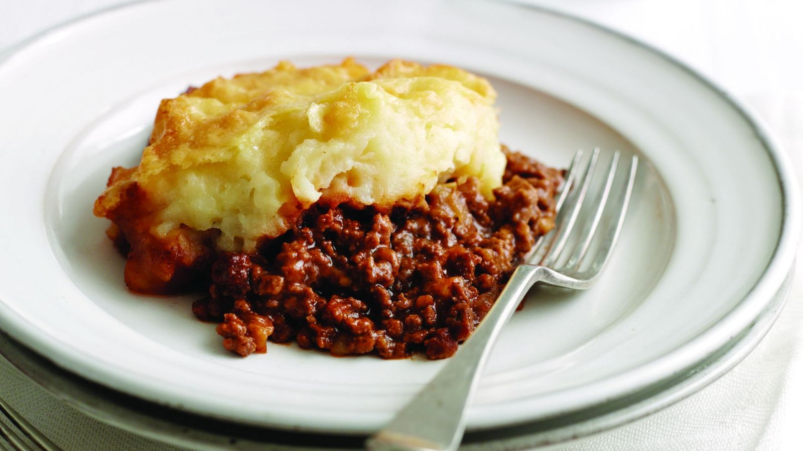
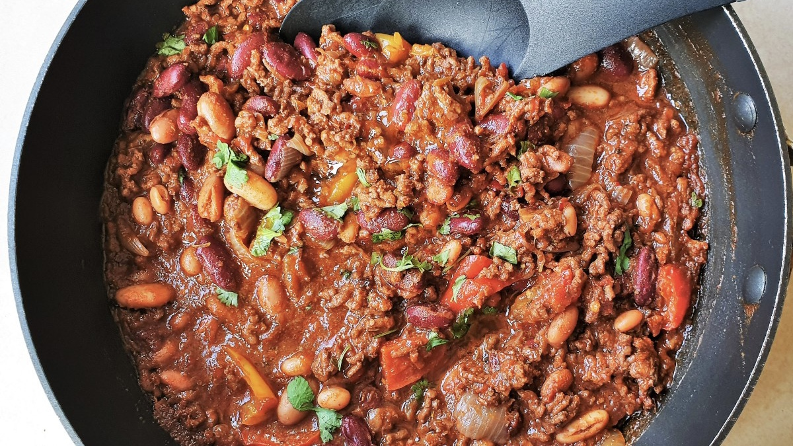
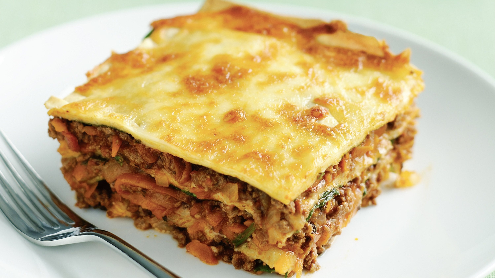

Shepherd's Pie
Easy Perp 20 mins Cook 25 mins 2 £5.60

- 400g pack of lamb, beef or Quorn mince
- Three quater full mug of water
- 1 tablespoon of gravy granules
- 6 medium potatoes cut into cubes
- 2 teaspoons of butter
- 1 mug of grated cheese
- Preheat oven to 180°C fan oven / Gas 6
- Put the mince into a pan with half a mug of water and bring to the boil. Simmer for 10-15 minutes. Add the
gravy granules and stir. Season with salt and pepper.
- Put the potatoes in a separate pan, with enough water to cover them, boil for 10 minutes and then drain. Add
the butter and mix.
- Pour the mince into the bottom of a casserole dish.
- Carefully spoon the potatoes onto the top and sprinkle with cheese.
- Cook for 20-25 minutes until the top is browned.
Chilli Con Carne
Easy Prep 20 mins 2 £4.32

- 1 tablespoon oil to fry
- 1 large onion chopped
- 2 cloves garlic finely chopped
- 250g pack of mince or Quorn
- 400g tin of chopped tomatoes
- 1 stock of cube beef, lamb or vegetable
- 2 teaspoons chilli powder
- 400g tin of baked beans
- 2 large potatoes to bake or rice to serve
- Heat a little oil in a frying pan and fry the onion and garlic for 1 minute
- Add the mince and cook until the meat is no longer pink.
- Add the tin of tomatoes, stock cube and chilli powder. Cook for 10 minutes.
- Add the beans and cook for a further one minute.
- Boil water and cook rice until fluffy and serve.
Lasagna
Hard | Prep 25 mins Cook 25 mins| 4| £8.32

- 1 tablespoon oil to fry
- 1 onion chopped
- 2 cloves garlic crushed
- 500g pack of minced beef, lamb or Quorn
- 400g tin chopped tomatoes
- 2 tablespoon tomato purée
- 1 teaspoon sugar
- 1 beef stock cube
- 1 teaspoon mixed herbs
- 250g packet of lasagna strips
- 2 mugs grated cheese
- 3 tablespoons of flour
- 2 mugs of milk
- Half teaspoon of nutmeg
- 25g of butter
- Salt and pepper
- Preheat the oven to 180°C fan / Gas mark 6.
- Make the Cheese Sauce by putting the grated cheese into a saucepan, add flour, salt, pepper and paprika and
stir well.
- Add the milk and butter. Put on a low heat and bring to a boil, stiring all the time. The sauce should
thicken.
- Make the Bolognese Sauce by adding the mince and cook until the meat is no longer pink.
- Add the tin tomatoes, tomato purée, mushrooms and sugar. Crumble the stock cube into the pan, stir well.
Bring to boil, then simmer gently for 10 minutes. Add the herbs and season well with salt and pepper.
- Put a layer of Bolognese sauce on the bottom of a casserole dish and cover with lasagne strips. Next, put a
layer of cheese sauce, then, then padta strips, then the rest of Bolognese sauce. And repeat until dish is
full. Top with cheese.
- Cook for 25 minutes. Test the pasta with a fork to see if its cooked. If not, cook for another 5-10 minutes.
- Serve with salad or baked potato.